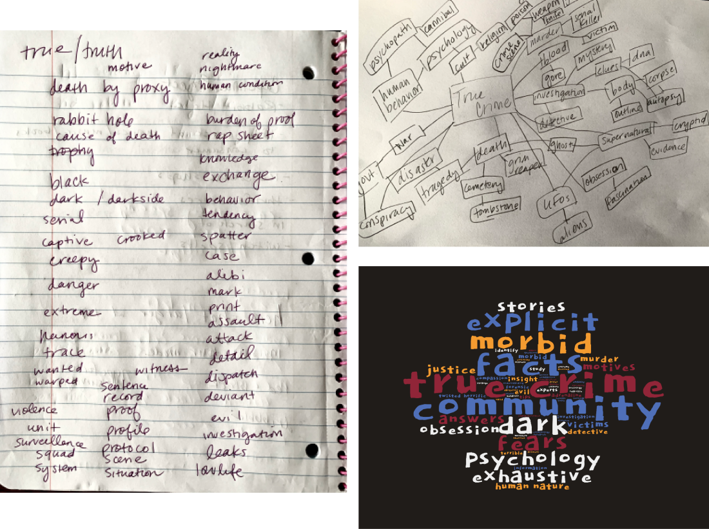
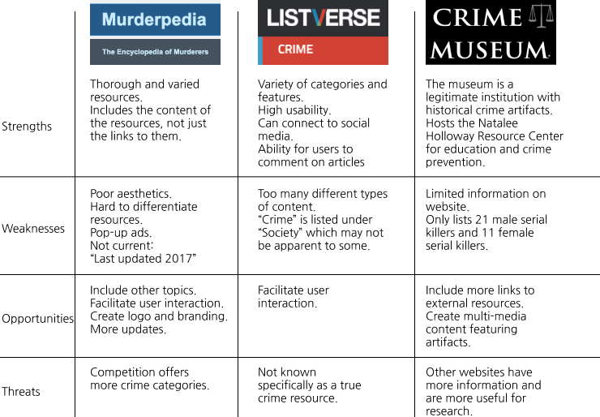
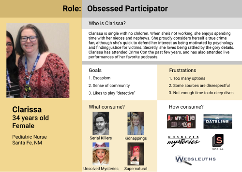
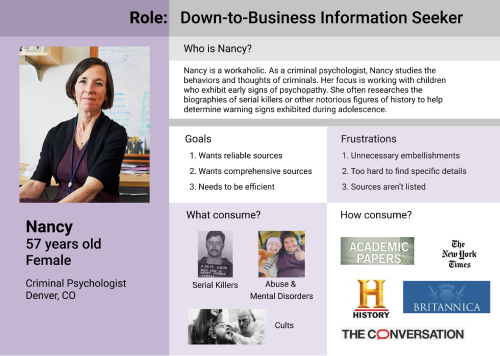
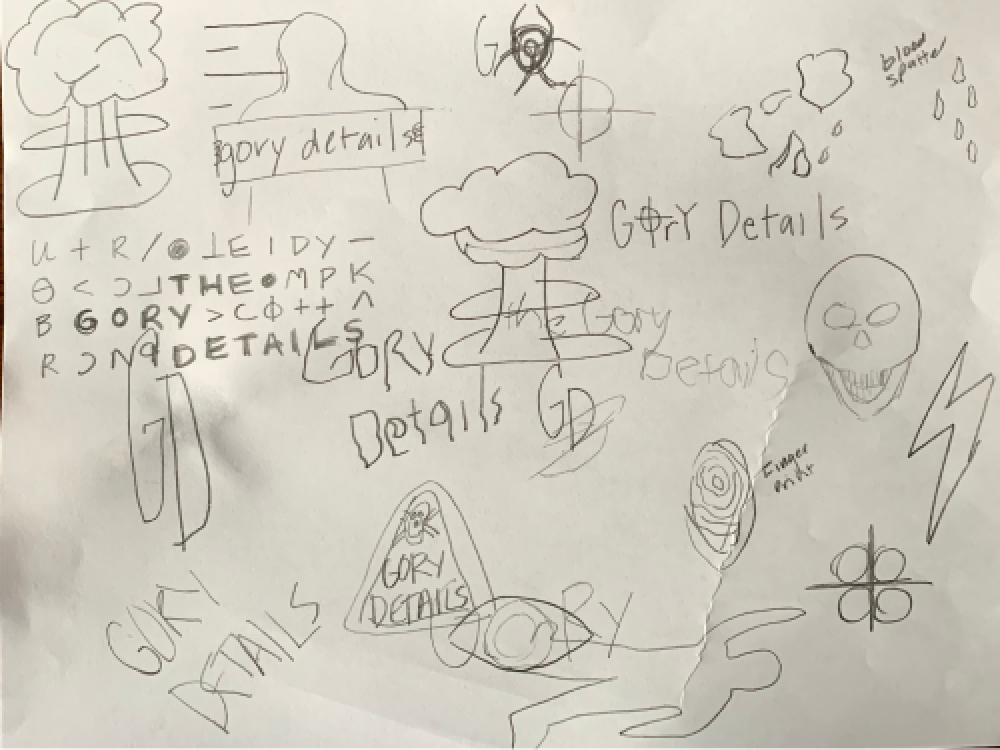
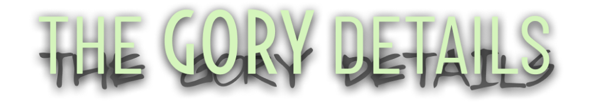
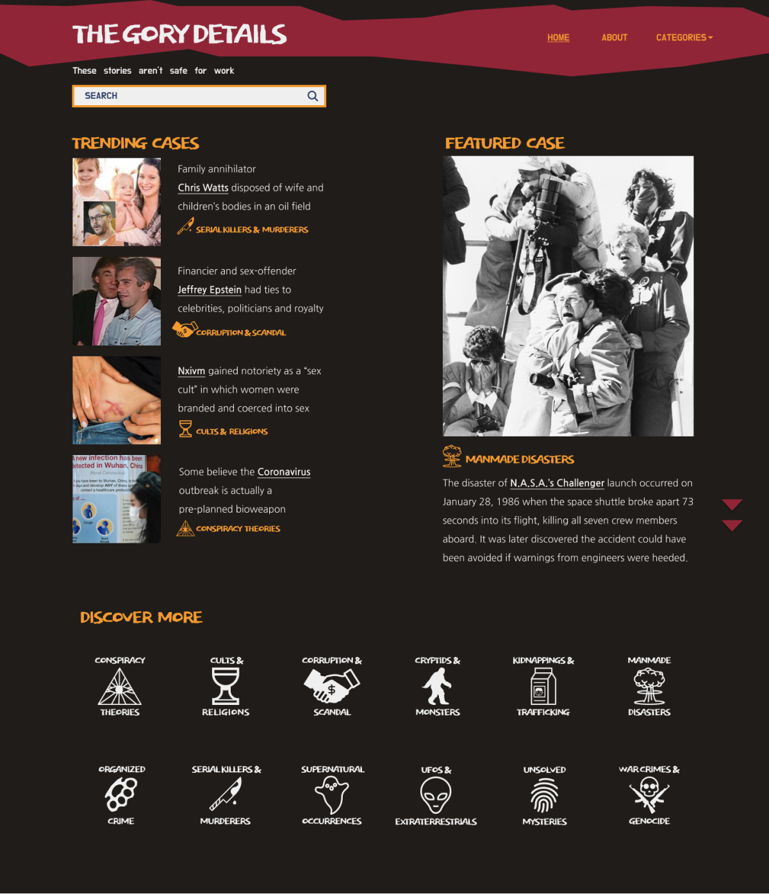
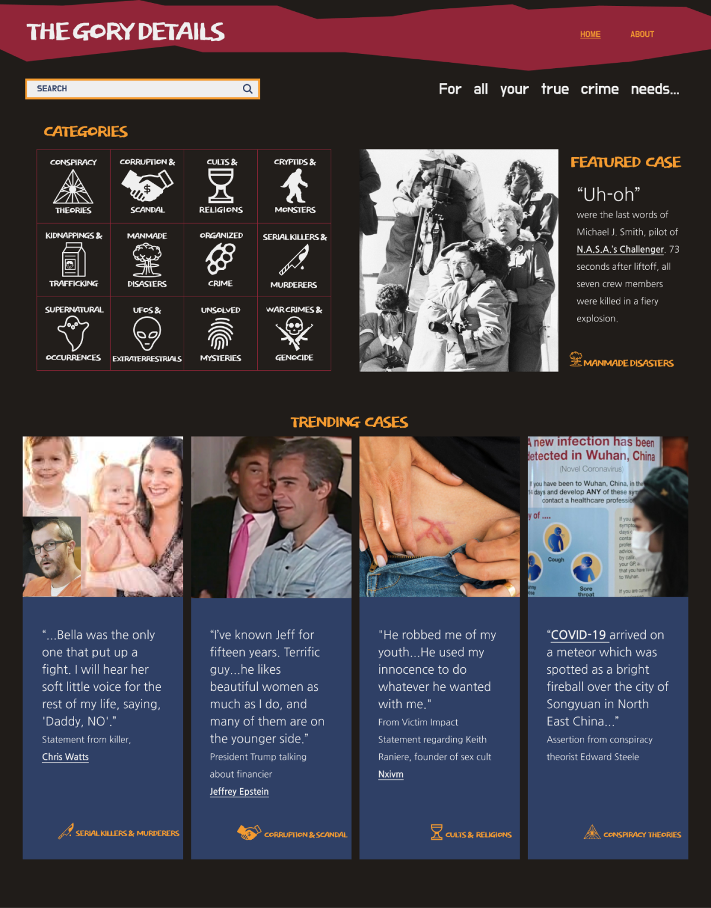

Case Study: The Gory Details
THE GORY DETAILS is both an aggregator and a rating system for content considered to be part of the true crime genre.
See the prototype
The true crime genre is experiencing a rise in popularity right now,
and content creators are eager to meet the enthusiastic demand of audiences. Unfortunately, this
inundation of documentaries, podcasts and literature is often repetitive, overwhelming and of
inconsistent quality.
THE GORY DETAILS is a user-generated collection of links to true crime media.
Materials are organized by category. Categories include:

Within each category, individual instances (topics) have their own page with resources organized by type. Types of resources include:
Articles
Books
Landmarks
Movies
Podcasts
Other
As you’ll see in the prototype, I’ve already included some of the more well-known cases as a starting point for users. If there is a case or topic that is not featured, they are welcome to submit it. The same goes for the content relating to each case. Submissions are vetted to ensure they are unbiased and factual. When users visit the topic pages, they can verify the quality of the resources by providing comments and reviews.
In my role as designer, I was responsible for making all of the design and branding decisions and for producing all of the deliverables.
Concept Discovery: Brainstorming & Mindmapping
I set out on this project knowing that I wanted to create a resource for the true crime fan community, which is growing every day. In order to narrow in on a specific concept, I brainstormed a list of words and topics that I associate with the genre.

Competitive Analysis
I also took a closer look at three popular websites known as online destinations for information about true crime cases. While each exhibit their own strengths and weaknesses, it was apparent to me that no individual destination served as definitive resource.

With this information, I knew it was time to talk to true crime content consumers. I wanted to find out more about what their specific interests are, what their consumption habits are, and if they would be interested in a search engine dedicated to true crime content.
97.8% of respondents said that when they come across a topic that interests them, they “use a search engine to find online resources”
45.7% say there is not enough true crime content out there; 19.6% say there is too much.
That tells me that 45.7% are not able to find the content that interests them and 19.6% could use a tool to feel less overwhelmed.
76.1% would definitely use a true crime search engine and 21.7% would consider using one.
Lastly, 71.7% of my respondents are female - which fits the current stereotype for this type of consumer.
67.4% are aged 25-39
23.9% are 40-60
8.7% are 18-24

User Personas
I next created three personas to help me imagine who would be typical users of this platform. By putting myself in their shoes, I was able to better understand their needs.



User Stories
I then prioritized the specific tasks that users may undertake when visiting the site.
High Priority User Stories
As a user, I want to search for a specific topic so I can find more information about it.
As a user, I want to search for a specific person, group, place or thing so I can find more information about it.
As a user, I want to see a list of resources relating to that topic so I can find more information about it.
As a user, I want to click on a link to get to these external resources (when applicable) so I can directly get to the information.
As a user who will be using these resources for professional or academic reasons, I want to know that the resources listed have been vetted so I know the information is reliable.
Medium Priority User Stories
As a user, I want to know what other true crime fans think of each resource so I can judge the quality of each resource.
As a user, I want to know that the resources listed are up-to-date.
As a user who is familar with a resource listed, I want to share my rating/review of that resource so I can tell others about the quality of a resource.
As a user who is interested in a topic not yet included, I want to to create an account so I can suggest it is added so that topic will get its own page.
As a user who knows about a resource not yet included, I want to create an account so I can suggest it is added so more users will know about that resource.
Lower Priority User Stories
As a user who doesn't have a specific topic/subject in mind, I want to select a button that will show me a random page so I can be introduced to something unexpected.
As a user who plans to return to the site, I want to create an account so that my favorite topics are saved so I can revisit these topics later.
Wireframes
The users stories helped to guide my design of the wireframes, ensuring that the screens featured all of the necessary functionalities. I began with pencil and paper sketches and then moved on to Figma files.
Home Page
Category Page
Topic Page
With the structure in place, I was ready to flush out the visual character of the site.
The logo design, color palette and typography are partially influenced by the retro film imagery of the horror and mystery genres. The films of Alfred Hitchcock, as well as Stanley Kubrick’s The SHINING, were of particular impact. It was also impacted by the art created and symbolism used by the troubled minds investigated by the media featured on the site.
Typography
THE AIRCRAFT
(Dokdo Regular / Size 64pt)
The spectacle before us was sublime
(Dokdo Regular / Size 32pt)
Apparently we had reached a great height in the atmosphere, for the sky was a dead black, and the stars had ceased to twinkle.
(Nanum Gothic Regular / Size 18pt / 25pt line-height)
Logo Development
Initial sketches of the logo attempted to capture the sense of the dark subject matter.

Initial Version of Logo

Final Version of Logo
THE GORY DETAILS
The initial version of the logo included a shadowed copy of the title to play on the idea that things aren’t always what they appear, especially in true crime. I later decided to go with a much cleaner version that is easier to read, but still appropriate for the genre.
Usability Testing
After implementing the visual design to the wireframes, I now had the hi-fidelity mock-ups ready to perform some usability testing. I provided participants with several tasks to perform while I observed their impressions and decision-making. Reflecting on their responses resulted in a number of changes in the layout and image usage. The two screen shots below reflect the original mock-up and the iterated mock-up based on testing.
Before Usability Testing

After Usability Testing

See the Prototype
Brainstorming, consumer communication, research into the genre and market landscape, along with usability testing, helped form the prototype for THE GORY DETAILS. I am satisfied that it is, in this state, a solid foundation for further growth as a platform. I hope to one day add more features to increase the social aspect for users and maybe even produce original true crime content.
I am optimistic for the future of this project, largely because of the enthusiastic response I received when performing initial user surveys. While the subject matter featured may seem a little dark to some, it cannot be denied that almost all of us are fascinated by the extremes of human behavior.
Back to top
See more Projects